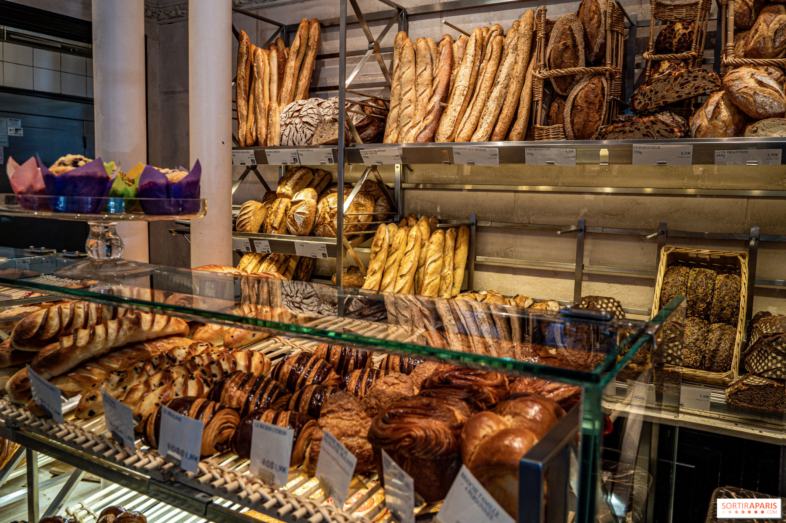

Project
Website
Techniek
HTML, CSS, JS
Doelgroep
Lokale Klanten
Focus
Sfeer & UX
01 — Opdracht
Een digitale etalage voor ambacht.
Lokale handelaars hebben vaak behoefte aan een sterke online aanwezigheid die hun offline karakter weerspiegelt. De opdracht was om een "onepager" website te ontwerpen en ontwikkelen voor een fictieve ambachtelijke bakkerij: "Bakkerij Sven" in Landen.
Het doel was niet om een complexe webshop te bouwen, maar een digitale etalage. Klanten moeten de warme, traditionele sfeer van de winkel online kunnen proeven, het aanbod ontdekken en razendsnel praktische informatie zoals openingsuren en locatie kunnen vinden.
02 — Design & Aanpak
Sfeer, typografie en gebruiksvriendelijkheid.
Om het ambachtelijke karakter visueel te ondersteunen, is er gekozen voor een warm kleurenpalet en sprekende fotografie van versgebakken brood en patisserie. Qua typografie is er gebruikgemaakt van de elegante serif-font Playfair Display voor de koppen, gecombineerd met de strakke schreefloze Lato voor optimale leesbaarheid in lopende teksten.
De User Experience (UX) was cruciaal: een klant die hongerig de website bezoekt, wil direct weten of de bakkerij open is en waar deze zich bevindt. Deze call-to-actions en informatieblokken kregen een prominente plek.

03 — Code & Techniek
Custom built, zonder logge templates.
De website is vanaf een leeg canvas volledig "custom" geschreven in pure HTML en CSS. Geen zware CMS-systemen of logge templates, maar schone, semantische code die zorgt voor razendsnelle laadtijden.
Voor een dynamische gebruikerservaring is er gebruikgemaakt van Vanilla JavaScript. Zo is er onder andere een soepele 'smooth-scroll' navigatie ingebouwd en een interactieve toggle-knop die met een vloeiende CSS-animatie de wekelijkse openingsuren in- en uitklapt.
HTML5
CSS3
Vanilla JS
04 — Resultaat
Snel, modern en responsive.
Het eindresultaat is een moderne, mobielvriendelijke website die perfect schaalt op elk apparaat. Dankzij de naadloze integratie van Google Maps en een interactieve sectie voor de openingsuren, hebben klanten direct alle benodigde informatie binnen handbereik.
Bekijk Live Website